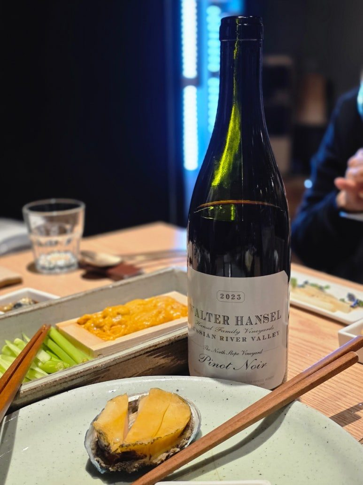
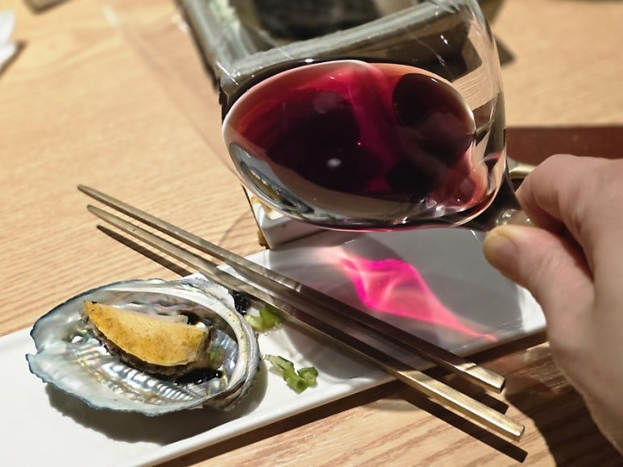
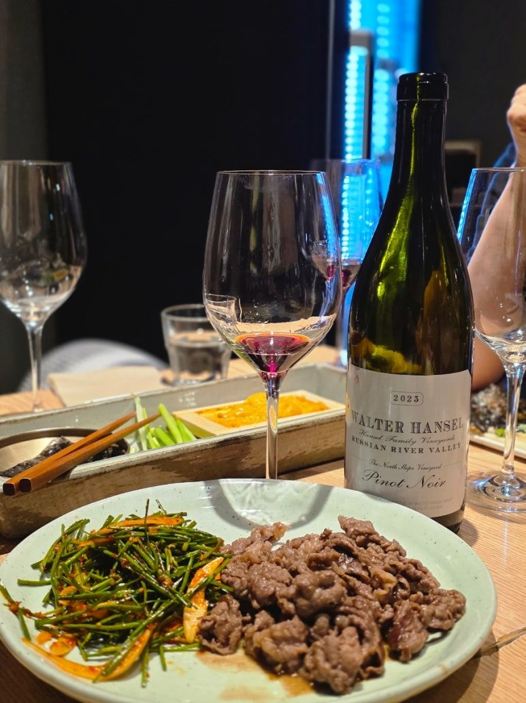

반전의 우아함을 보여준 미국 피노 누아, 월터 한셀 노스 슬로프 피노 누아 2023
미국 캘리포니아 소노마 프리미엄 피노 누아의 대명사이자 애호가들 사이에서 늘 높은 인기를 자랑하는 월터 한셀 와이너리의 상징적인 싱글 빈야드 와인입니다. 캘리포니아 No.1 자동차 딜러 그룹인 핸젤 오토(Hansel Auto)의 오너 월터 한셀의 아들 스티븐 한셀이 소노마 루시안 리버 밸리에 설립해 1998 빈티지부터 명성을 쌓아온 곳입니다. 로버트 파커로부터 별 5개 만점 생산자이자 미국 최고 품질의 피노 누아, 샤도네이 생산자라는 평을 받는 월터 한셀 노스 슬로프 2023 빈티지의 정교하고 아름다운 풍미를 전해드립니다.
미국 캘리포니아 소노마 프리미엄 피노 누아의 대명사이자 애호가들 사이에서 늘 높은 인기를 자랑하는 월터 한셀 와이너리의 상징적인 싱글 빈야드 와인입니다. 캘리포니아 No.1 자동차 딜러 그룹인 핸젤 오토(Hansel Auto)의 오너 월터 한셀의 아들 스티븐 한셀이 소노마 루시안 리버 밸리에 설립해 1998 빈티지부터 명성을 쌓아온 곳입니다. 로버트 파커로부터 별 5개 만점 생산자이자 미국 최고 품질의 피노 누아, 샤도네이 생산자라는 평을 받는 월터 한셀 노스 슬로프 2023 빈티지의 정교하고 아름다운 풍미를 전해드립니다.
거친 캘리포니아의 태양 아래서 세계적인 와인 명가인 DRC, Leroy와 견줄만한 훌륭한 프랑스 부르고뉴 그랑 크뤼 스타일을 모두 표현해내는 이 와인의 진짜 매력을 상세히 파헤쳐 보겠습니다.

PART 1. 뻔한 편견을 깨는 서늘하고 여리여리한 매력
과거 캘리포니아 피노 누아나 월터 한셀의 이전 빈티지 일부 후기들을 보면 흔히 진하고 달콤한 잼 같은 과실미를 떠올리기 쉽습니다. 하지만 최근에 만나는 월터 한셀, 특히 이번 2023 빈티지의 노스 슬로프(North Slope) 밭은 그런 선입견을 완벽하게 깨뜨립니다.
노스 슬로프는 와이너리의 북쪽 경사면에 위치하여 상대적으로 햇살을 완만하고 서늘하게 받으며 포도가 천천히 익어가는 테루아를 가졌습니다. 덕분에 과한 추출이나 달큰한 묵직함 대신, 프랑스 부르고뉴 그랑 크뤼가 연상될 정도로 되게 여리여리하면서도 화사하고 세련된 정교한 스타일을 유감없이 보여줍니다.
PART 2. 테크니컬 데이터 및 상세 지표
생산지: 미국 > 캘리포니아 > 소노마 > 러시안 리버 밸리 (Russian River Valley)
품종: 피노 누아 (Pinot Noir) 100%
알코올: 13.7% 내외
와인 스타일 지표
당도: ● ○ ○ ○ ○ (이전 빈티지들의 달큰한 느낌과 달리, 잔당감 없이 아주 깔끔하게 떨어지는 드라이 스타일입니다.)
바디: ● ● ● ○ ○ (과하게 묵직하거나 끈적이지 않고, 입안을 맑고 우아하게 감싸는 매끄러운 바디감입니다.)
산도: ● ● ● ● ○ (서늘한 북향 경사면 특유의 살아있는 생동감과 세련된 산미가 돋보입니다.)
타닌: ● ● ○ ○ ○ (거친 느낌 없이 아주 촘촘하고 부드럽게 녹아들어 유연한 질감을 자랑합니다.)
테이스팅 노트
잔을 채우는 투명하고 예쁜 루비 빛깔부터 여리여리한 감성을 자극합니다. 코끝을 대면 인위적인 단 향 대신 맑은 산딸기, 붉은 체리, 크랜베리의 싱그러운 붉은 과실 아로마가 화사하게 피어오릅니다. 프랑스 부르고뉴 스타일을 표방하는 만큼 은은한 장미 꽃잎 향과 장인 정신이 깃든 섬세한 미네랄리티, 그리고 과하지 않고 고급스럽게 녹아든 바닐라와 토스트 뉘앙스가 겹겹이 스쳐 지나갑니다. 입안에서는 알코올감이 강하게 느껴지지 않을 정도로 텍스처가 부드럽고 가벼우며, 정교하고 섬세한 산미가 긴 여운으로 우아한 피니시를 장식합니다.
PART 3. 추천 포인트 및 페어링
시선을 사로잡는 스토리텔링과 패키징: 자동차 딜러 그룹의 성공 신화와 세계적인 평론가 로버트 파커가 DRC, 르로아와 비교하며 극찬했다는 스토리는 모임이나 비즈니스 자리에서 훌륭한 대화의 소재가 됩니다. 이해할 수 없을 정도로 합리적인 가격에 그랑 크뤼 급 퀄리티를 보여주어 와인 선물용으로도 인기가 높습니다.
전복 버터구이와의 환상적인 마리아주: 월터 한셀 노스 슬로프 피노 누아 2023이 가진 이 여리여리하고 깨끗한 텍스처는 고소하고 부드러운 해산물 요리와 만났을 때 그 진가를 발휘합니다. 특히 노릇하게 구워낸 전복 버터구이와의 페어링이 아주 훌륭합니다. 전복 특유의 쫄깃한 식감과 은은한 감칠맛, 그리고 버터의 고소한 풍미가 와인이 가진 부드러운 질감과 매끄럽게 맞물립니다. 와인의 과실미가 과하거나 달지 않고 여리여리하게 받쳐주기 때문에 전복 본연의 맛을 전혀 해치지 않으며, 특유의 신선하고 깨끗한 산미가 버터의 느끼함을 싹 잡아주어 한 점 한 잔을 마실 때마다 기분 좋은 청량함을 선사합니다.

PART 4. 큐레이션 포인트: 클래식 부르고뉴 스타일의 제안
오린 스위프트처럼 대담한 미국 와인들과는 또 다르게, 로버트 파커의 극찬대로 가격 대비 믿을 수 없는 품격을 보여주는 와인입니다. 서늘한 테루아가 준 대담함 속에 정교한 밸런스를 숨겨두어, 오늘 저녁 부드러운 전복 요리와 함께 우아한 반전을 담은 한 잔으로 특별한 시간을 채워보시는 건 어떨까요?

010-8078-7493 문자 주시면 가장 빠르게 안내해 드립니다.
이 글은 땡큐와인 네이버 블로그에 먼저 올린 글이에요.